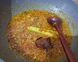

RESEPI AYAM BALADO

Bahan Utama
3 ketul ayam (tak kesah bahagian apa)
3 biji Bwg merah (chopper je)
2 ulas Bwg putih *** (chopper je)
10 tangkai cili *** (chopper je)
1 kotak santan kara (110ml)
1 batang Serai (ketuk je)
1 keping Asam keping (tkde pun tkpe)
Sedikit sayuran ikut kesukaan (Lobak/kcg panjang/boncis)
- Minyak ayam td kalau lebih, kurangkan dia. Masukkan 3 bahan chopper & sebatang serai. Tumis hingga perang.

- Masukkan asam keping, setengah sudu serbuk kunyit, garam, gula, perasa. Gaul sebati.

- Masukkan ayam & sayur. Biarkan selama ayam masak & sayur lembut dalam 6-7 minit mcmtu. Gaul kadang2...